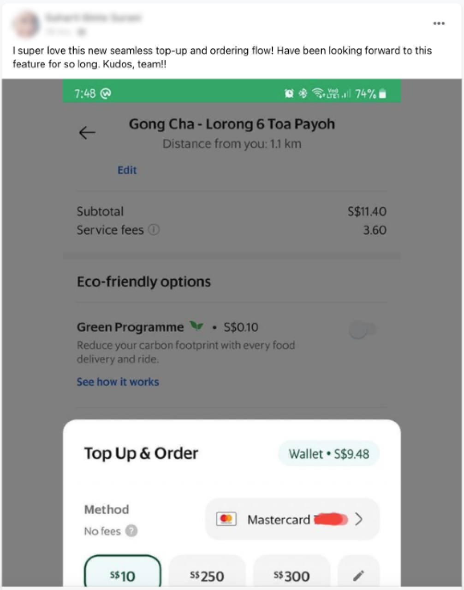

Launched ✦ Sep 2022
Jump to resultsThis is a story about expectations versus reality.
When I first joined Grab, I was assigned to the Wallet team. Therefore, I ditched the familiar for the new. I switched up card payments on the Grab app for the GrabWallet.
That’s when I felt the gap in my payment experience.
The next time I needed a ride, I went from booking a ride with just one tap to 6-8 taps. Plus having to do quick math.
User's expectation
Paying by e-wallet should be as convenient as paying by card.
User's reality
However, for users who want to avoid keeping a balance, topping up has become part of the default payment experience.
How might we improve the top-up experience for GrabWallet users who were booking a ride or ordering food? My PM saw the value in going even further with it, possibly streamlining it down to just one tap.
However, top-up experience wasn’t on the backlog at that time as it had just been updated a year ago. And so there was the matter of getting it prioritised as well.
It was a question we expected and knew it would be a challenge to get the project prioritised unless we could prove direct and significant financial impact beyond simply improving the user experience. We outlined the current points of failure where users either did not top-up to complete their payment or would switch to a different payment method.
From the data we provided, ██% of ride bookings and ██% of food orders for users with GrabWallet as default payment method required a top up.
Of these users, only 24-46% continued to top up.
It was concerning that more users were switching to other more operationally-expensive payment methods (eg. credit cards).
Additionally, by reducing the steps between top-up and payment, opportunities for the user to change their mind is reduced. This could be from having to choose between topping up or switching methods, taking too long to secure a ride, or potential fare changes after topping-up.
Therefore, we expected significant improvements in top-up attempt rate which would also improve overall booking rates.
There was a push to get users to top-up larger amounts at once to reduce individual transaction costs borne by Grab, or to adopt Auto Top-Up, an opt-in feature that reloads your wallet when its balance falls under a set threshold.
While Auto Top-Up's adoption rate was in the single digits, it was not insignificant - proving a demand for seamless top-ups. However, the fixed threshold meant that manual top-ups were still necessary. Additionally, Auto Top-Up was a can of worms with many issues reported but not yet fixed.
Among users with insufficient balance, 30% of users would top up almost exactly what they needed for rides and it goes up to 48% for food delivery. The difference, presumably, could be attributed to the challenge of guesstimate-ing the difference when one is in a hurry.
Additionally, the decision makers at Grab regularly topped up $500 or more at a time and believed that we should encourage users to do the same.
Whereas regular users had greater perceived liability holding excess cash in an e-wallet (eg. from fraudulent transactions). New users who have yet to commit to regular use are naturally more risk averse and would avoid topping up more than required. Especially if the funds cannot be withdrawn.
Certainly, if we could improve the experience for these wary users it might even help with overall wallet adoption and retention.
The original plan was to reduce the entire interaction down to two taps. One to bring up the top-up bottomsheet, and one to confirm both the top-up and booking/order.
However, card companies warned us that it looked too much like a ‘passthough’ transaction rather than a ‘top-up’.
Expectation
“We could just make top-up and payment a single step!”
Reality
“It’s called back-to-back payment and would cost us more.”
But we couldn't just leave it as it is. The current experience was a slog.
We were going to try to persuade them by hook or by crook and with a bunch of back-and-forth, slowly ironing out the details, we eventually found a middle ground given that these restrictions were newly laid out and had no precedence.
Firstly, the top-up-esque UI allowed us to circumvent back-to-back restrictions.
Secondly, amounts would be personalised, allowing us to cater to both min-amount and bulk top-up users.
We kept it to 3 options max to avoid a choice paralysis while keeping it looking like a top-up screen.
The first option being the minimum top-up required (delta). The second and third could be a percentage of the first option or a lump sum, which our data analysts were more than happy to experiment with.
At the same time, fees were introduced for certain funding sources which complicated things a little.
How much was too much?
Fees added an additional layer of complexity when it came to balancing transparency and visual clarity.
For example, for a top-up of $10, the charge reflected on a user’s card statement would’ve been $11 inclusive of fees. We also did not want it confused with service or processing fees.
Given that users were shown to pay attention to such details, we prioritised disclosure.
Must-have or good-to-have?
Ideally, grouping the options with a sliding or grouped select option would reduce visual clutter.
Unfortunately, the proposal fell through due to its limited use which was understandable given the nature of a design system. As users are not required to interact with the options, it would ideally fade into the background over time.
Slide or tap?
We started with a slide action to prevent mistaps as well as to have it consistent with other payment-adjacent flows.
However, business pushed for us to make it a single tap due to higher CTR. Since it was still two taps, the likelihood of mistap was low. It was also a repetitive action with fairly low stakes so having a little inconsistency was a small price to pay.
What's in a name?
From usability tests, it seemed unclear to some users that they could top up without leaving the booking flow. As such, we wanted the CTA to reflect the additional top-up action.
However this was rejected as stakeholders wanted to preserve “Book [RideType]” to avoid inconsistencies.
As such, we had to look into a different entry point for users with a low wallet balance.
Dollar or cents?
While users would have preferred to top up the exact amount down to the cents, we decided upon rounding up to nearest dollar.
This was to avoid reducing the wallet balance to zero, hence encouraging retention. It also keeps the display cleaner with fewer distractions and makes it clearer that it’s a top-up on statements.
Amusement or annoyance?
We looked into transition states as well but eventually kept it simple as transitions took no longer than 1s each time.
We’ve had users call out animations for being too repetitive in frequently used actions.
Development of additional animations also needed to be prioritised separately for each Grab service.
Business outcomes
Top-up attempt rates for ride bookings increased by 34%, while the food vertical increased by 17%.
The results exceeded our expectations and remained stable months after the rollout.
On top of meeting its goal, it also contributed to the bottom line ($$$) by reducing drop-offs from users that would not have switched payment methods at all.
User outcomes
01More efficient ride booking/food ordering for users with an insufficient wallet balance - from 8 taps down to just 2.
02Positive testimonial in the internal feedback reporting channel soon after early access rollout - we had not even announced the launch of this feature internally!

03Top-up no longer highlighted as an area of concern in NPS feedback. Was originally thought to be attributed to high minimum top-up amount requirement and/or lack of access to top-up entrypoints.
While not all good ideas guarantee success, this project has shown me that even worthwhile projects could be shrouded in doubt and met with much resistance.
As with any other project, we’ve had pushback and roadblocks from both within and outside the company. Sometimes, I'd start to doubt if I were on the right track. Fortunately, I got to work with an amazing team who shared my vision, stood by the project, helped fight fires and provided valuable feedback.
Persist in making a case for your project, make a case against other projects, and get more people on board.
Do whatever it takes to get your horse in the race and see it to the finish line. But I've also learnt to be patient if it takes a little time.
Additional details on this and other projects will be available with an interview. 👀